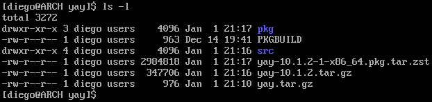
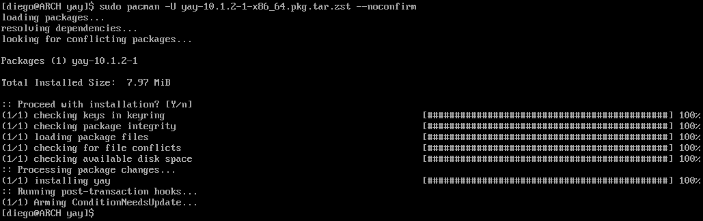

YAY
En Arch Linux existe un repositorio desde el que se pueden obtener paquetes que son mantenidos por la comunidad de usuarios, conocido como AUR - Arch User Repository. A diferencia de los paquetes oficiales, estos requieren que el usuario descargue un PKGBUILD que ejecutará los pasos necesarios para generar el instalable que sí que se instala en el sistema con el comando pacman. Estos pasos incluyen, entre otros:
- Descarga de código fuente o binarios.
- Comprobación MD5 de los recursos descargados.
- Instalar dependencias necesarias.
- Compilar el código fuente descargado.
- Generar el instalable.
Una desventaja de este tipo de paquetes es que cuando se actualiza el sistema, no son tenidos en cuenta. Sin embargo, existe una herramienta llamada yay que permite automatizar su instalación y actualización, junto a los paquetes oficiales. Es decir, no es necesario usar pacman si se tiene instalado yay.
Instalar yay
Algunos de los comandos a emplear no permiten ser ejecutados como
root, por lo que antes hay que iniciar sesión con otro usuario.
Instalar paquetes desde el AUR requiere descargar ciertos paquetes previamente:
sudo pacman -S base-devel --noconfirm
En este caso es necesario lanzar el comando mediante
sudoal no estar trabajando como usuarioroot.
Inicialmente hay que crear una carpeta, descargar el PKGBUILD de yay y extraer el contenido:
mkdir yay
cd yay
curl https://aur.archlinux.org/cgit/aur.git/snapshot/yay.tar.gz --output yay.tar.gz
tar -xf yay.tar.gz --strip-components=1
El comando makepkg se encarga de generar el binario instalable:
makepkg -s
Tras finalizar, se habrá creado un fichero instalable mediante pacman en la ruta donde se ha ejecutado el comando anterior, de extensión pkg.tar.zst.

La estructura es idéntica a la de los paquetes oficiales, pero hay que tener en cuenta que al ser mantenidos por usuarios que no forman parte del equipo oficial de Arch Linux, es posible que en algún momento alguno de estos paquetes deje de ser actualizado hasta que otro usuario asuma su mantenimiento. Mientras eso ocurre, en la página del AUR correspondiente a ese paquete aparecerá como out of date.

Aunque un paquete marcado como out of date puede aún ser instalado y funcionar, es recomendable buscar alternativas para garantizar la estabilidad del sistema.
Para instalar yay, se emplea pacman con el flag U:
sudo pacman -U yay-10.1.2-1-x86_64.pkg.tar.zst --noconfirm

Finalmente, se puede borrar la carpeta temporal que se ha empleado:
cd ..
rm -rf yay
Gestionar paquetes con yay
Para instalar un paquete con yay, basta con localizarlo en la web del AUR y ejecutar el comando como si se tratara de pacman. Por ejemplo, para el paquete de Skype:
yay -S skypeforlinux-stable-bin
Para desinstalar un paquete se sigue empleado pacman:
sudo pacman -Rns skypeforlinux-stable-bin
Los flags
nysle indican apacmanque borre los paquetes que haya habido que instalar como dependencias del que se está borrando, en caso de que no sean requeridos por ningún otro paquete que haya instalado. Son de uso opcional, pero permiten mantener el sistema más limpio.
Actualización completa del sistema con yay
Dado que yay reemplaza y amplia el alcance de pacman, es posible usarlo para lanzar una actualización completa del sistema, incluyendo tanto paquetes oficiales como del AUR, de manera desatentida:
yay --noremovemake --noconfirm --nocleanmenu --nodiffmenu --noeditmenu --noupgrademenu -Syu